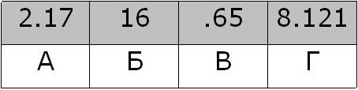

Доступ к файлу com.pas, находящемуся на сервере net.ru, осуществляется по протоколу http. Фрагменты адреса файла закодированы буквами от А до Ж.
Запишите последовательность этих букв, кодирующую адрес указанного файла в сети Интернет.
А) :// Б) / В) .pas Г) net Д) .ru Е) http Ж) com
- Чтобы решить данную вариацию задания нужно помнить структуру адреса в Интернете.
- 1) Сначала идёт протокол, как правило используется( "http" или "https" или "ftp").
- 2) Затем идёт "://".
- 3) После этого идёт название сервера, за которым ставится слэш( в данном примере "net.ru/").
- 4) Затем указывается название файла ("com.pas" в данном номере).
- В итоге получается строка "http://net.ru/com.pas" (или ЕАГДБЖВ).
На месте преступления были обнаружены четыре обрывка бумаги. Следствие установило, что на них записаны фрагменты одного IP-адреса.
Криминалисты обозначили эти фрагменты буквами А, Б, В и Г:

Восстановите IP-адрес. В ответе укажите последовательность букв, обозначающих фрагменты, в порядке, соответствующем IP-адресу.
- 1) Чтобы решить такой пример нужно помнить, что число в IP адресе не может быть больше, чем 255.
- 2) Зная это, можно решить этот пример просто методом подбора, как правило такой метод занимает меньше времени, чем остальные.
- 3) В итоге получится (162.178.121.65) или БАГВ.